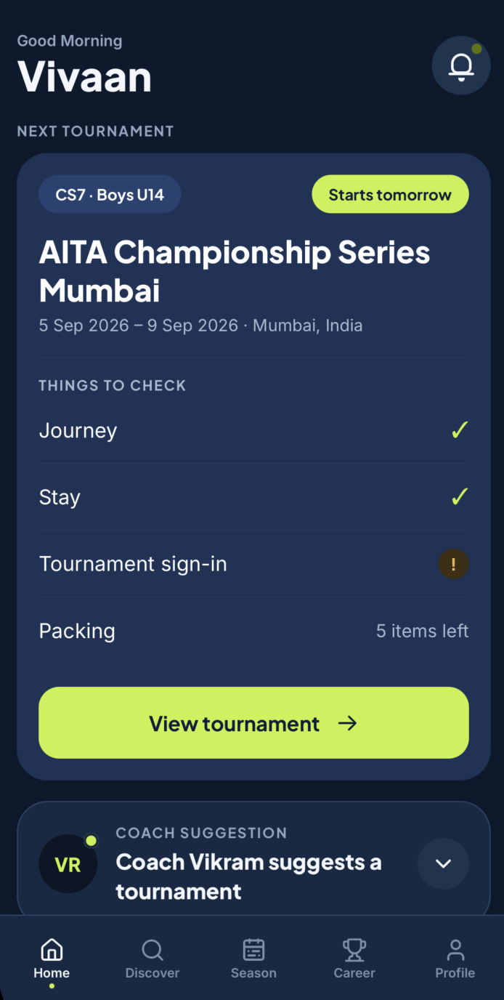
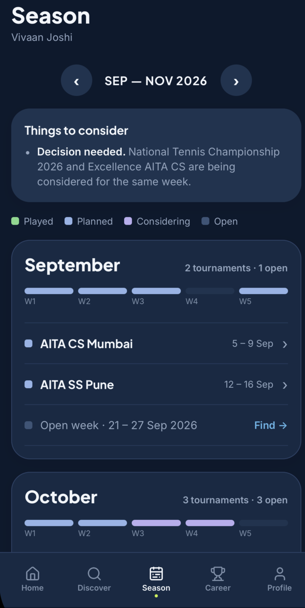
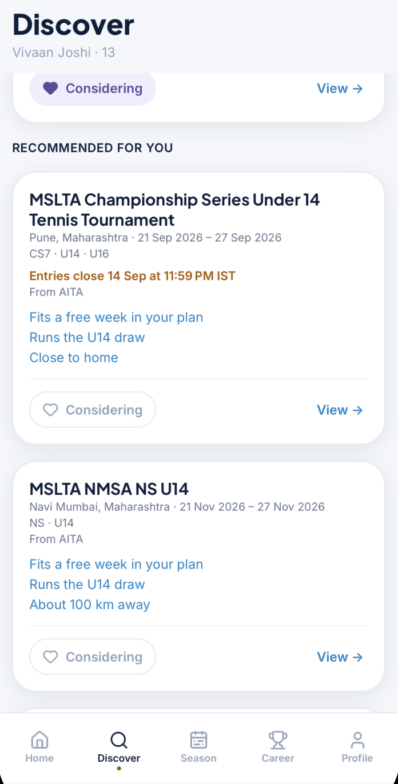
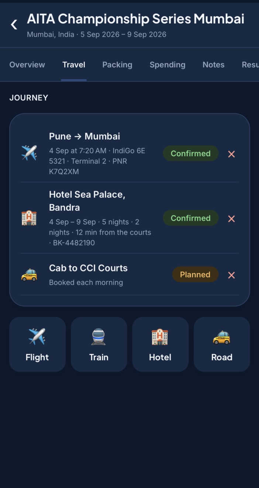
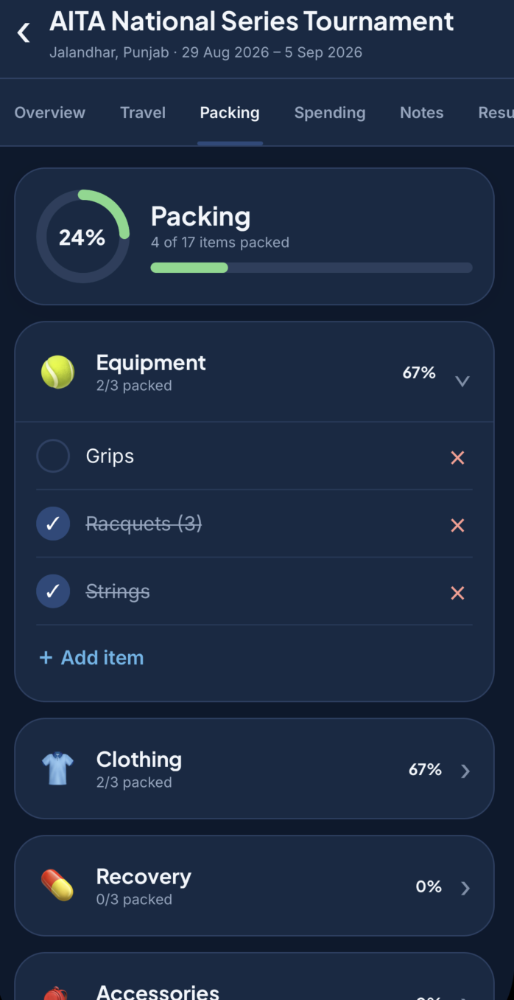
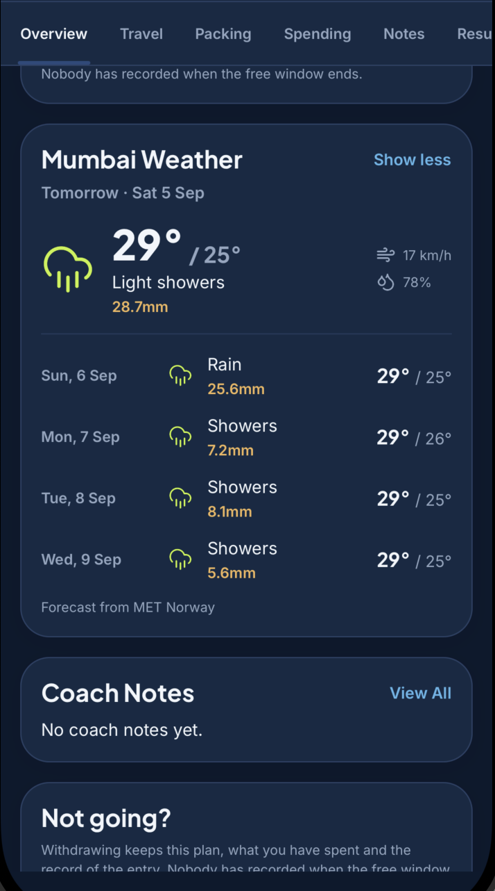
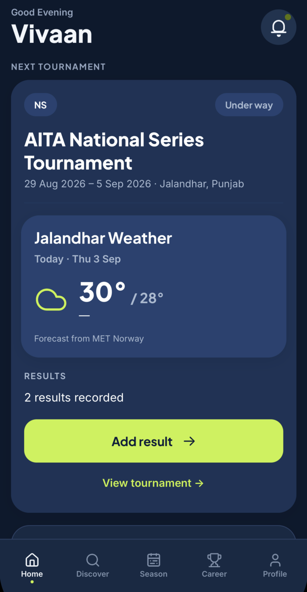
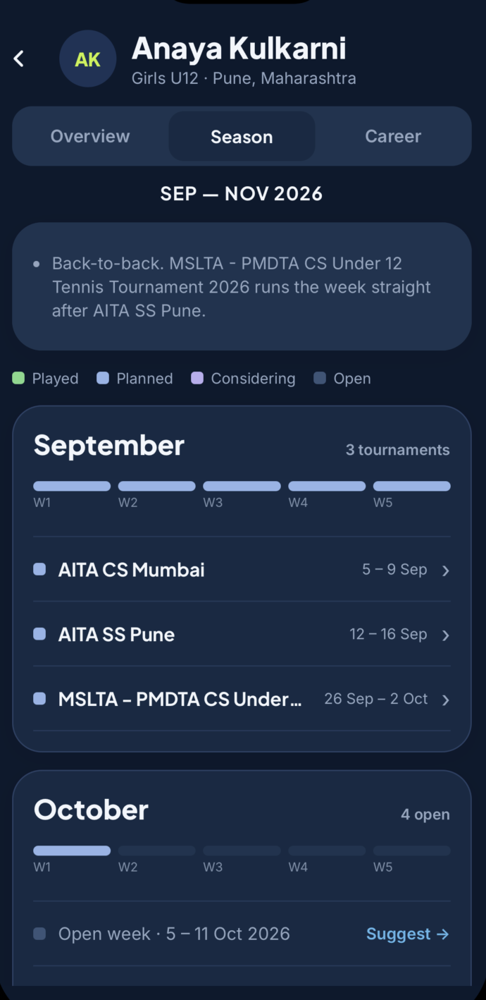
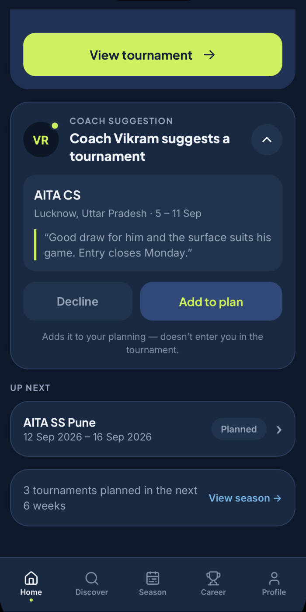
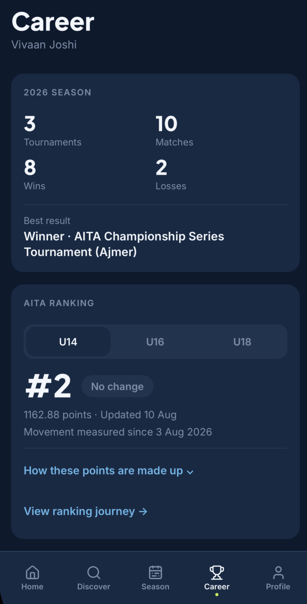

Built for junior tennis families
Their next tournament is only part of the journey.
TenniTrip helps families discover tournaments, plan the season, organise travel, prepare for tournament day and follow the player’s journey — all in one place.
Discover → Plan → Prepare → Travel → Check conditions → Play → Track



See the season before it happens.
Planned tournaments, events you’re considering and open weeks — together in one view. Spot gaps, clashes and decisions before the calendar becomes complicated.
Find tournaments that actually fit.
Discover events based on the player’s calendar, age category and tournament plan — and see exactly why TenniTrip is suggesting them.
No mysterious match scores. Just useful reasons.
Know what still needs doing.
Journey booked? Stay confirmed? Sign-in done? Packing finished? TenniTrip brings the practical side of the tournament into the same place as the tennis.
Keep the tournament journey together.
Flights, trains, hotels and road travel live alongside the tournament they belong to. Packing stays organised too, from racquets and grips to recovery gear.


Know what tournament week might look like.
See weather across the tournament dates — including temperature, rain, wind and humidity — right inside the tournament plan.
Because tournament planning doesn’t stop at the draw.

When play starts, TenniTrip changes with you.
The planning checklist gets out of the way. Tournament conditions and recorded results come forward instead, so Home reflects what matters now.

Planning doesn’t happen alone.
Give coaches a view of the player’s season, recent form and upcoming tournaments — and let them suggest opportunities when they see the right fit.
The coach suggests. The family decides. TenniTrip keeps everyone on the same plan.

Coach suggests → Family decides
Turn tournaments into a journey you can actually see.
Follow tournaments, matches, wins, best results and ranking progress as seasons build into a playing career.
Every tournament becomes part of the story.

One continuous journey
From “what should we play?” to “look how far they’ve come.”
TenniTrip Private Beta
Spend less time managing the journey. Spend more time on the tennis.
Plan the journey. Play the game.
Join the Private Beta →